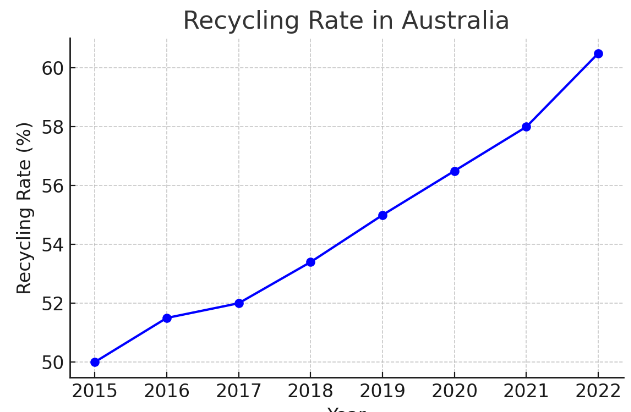
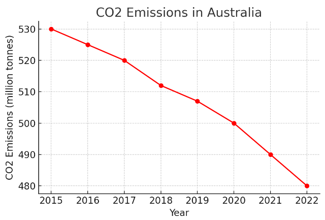
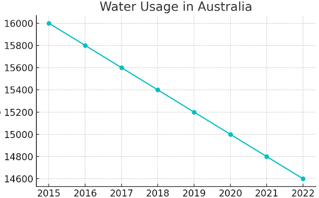

Sustainability means using resources in a way that doesn't harm the planet or use up everything, so future generations can also have what they need.
It focuses on three main areas:
1. Environmental Sustainability: Protecting nature by conserving resources, reducing pollution, and taking care of ecosystems.
2. Economic Sustainability: Growing the economy in ways that don't damage the environment, ensuring that resources are available for the future.
3. Social Sustainability: Making sure everyone has what they need to live well, like food, water, and healthcare, and promoting fairness and equality.
In simpler terms, sustainability is about living in a way that is good for people and the planet, both now and in the future.
The percentage of renewable energy usage has been steadily increasing from 14.6% in 2015 to 29.4% in 2022.
The recycling rate has gradually risen from 50% in 2015 to 60.5% in 2022.
CO2 emissions have been decreasing, dropping from 530 million tonnes in 2015 to 480 million tonnes in 2022.
Water usage has been reducing, going from 16,000 billion litres in 2015 to 14,600 billion litres in 2022.